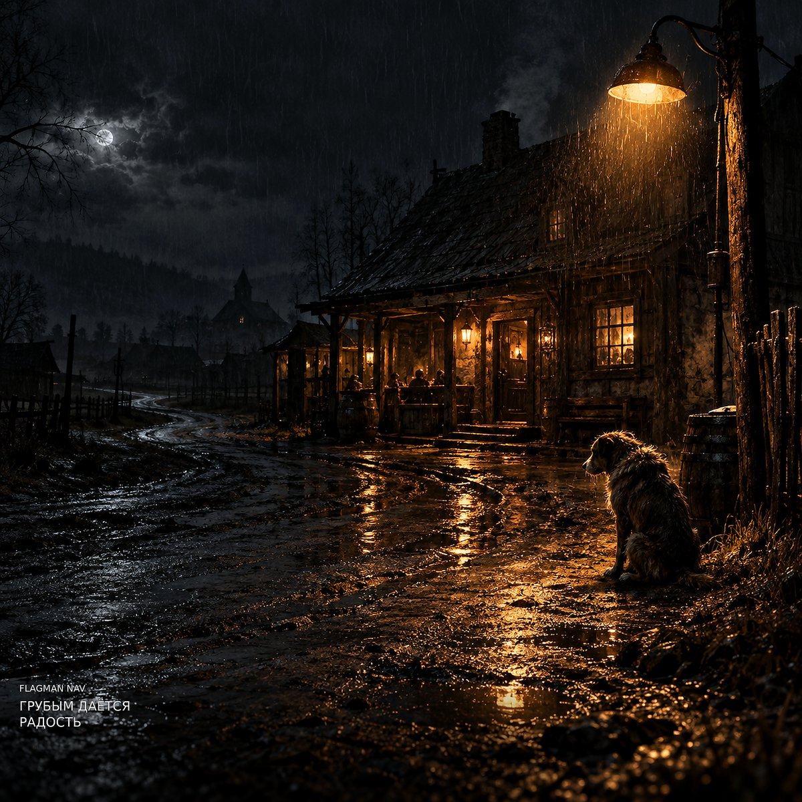

Сингл · 24 октября 2026
Грубым даётся радость
- 1. Грубым даётся радостьСлова: Flagman NAV — по мотивам стихотворения Сергея Есенина «Грубым даётся радость» (1923)5:10
Текст
Грубым даётся радость, Нежным даётся печаль. Мне ничего не надо — Мне никого не жаль. Жаль мне себя немного, Жаль мне бездомных собак. Эта прямая дорога Вновь привела меня в кабак. Грязные стены молчат, Дымом пропитана ночь. Все мои мысли кричат — И их не прогнать, не помочь. Что же вы, черти, ругаетесь? Разве я вам не родной? Каждый из нас здесь ломается, Каждый торгуется с судьбой! Я — сын этой пьяной страны! Я — сын её чёрной земли! За призрачный мир тишины Мы души свои продали! Нам обещали покой! Нам обещали года! Только за этой стеной Душа умирала всегда! Я — сын безмолвной страны! Я — сын её немой земли! Мы думали — это покой! А это были цепи внутри! Каждый из нас закладывал За рюмку свои штаны. Каждый себя оправдывал: «Так уж устроены мы». Мутно гляжу я на окна, В сердце — тоска и зной. Катится, солнцем промокнув, Улица предо мной. И если не будет завтра, Если погаснет заря, Мне всё равно — слишком поздно. Я пропадаю зря! Я — сын этой нищей страны! Я — сын её выжженной земли! За призрачный мир тишины Мы души свои отдали! Нам обещали покой! Нам обещали года! Только за этой стеной Ложь возрождалась всегда! Я — сын потерянной страны! Я — сын моей родной земли! Мы думали — это покой! А это были цепи внутри! Я уж готов... Я вижу бутылок рать. Я собираю пробки, Чтоб душу свою затыкать. Я уж готов... Мне нечего больше ждать. Пускай эта чёрная улица Учит меня умирать. Грубым — радость! Нежным — печаль! Мне ничего не надо! Мне никого не жаль! Я — сын этой бедной страны! Мне некуда больше идти! Если дороги темны — Значит, гореть нам в пути! Я — сын сей великой страны! Я — сын её живой земли! Пусть догорают огни — Я всё равно буду идти! Я — сын своей судьбы! Я — сын родной земли! Пусть разрываются сны — Я всё равно буду идти! Буду идти! Буду идти! Буду идти! Грубым даётся радость... Нежным даётся печаль... Мне ничего не надо... Мне никого не жаль.
Текст — авторская переработка: полностью аутентичного текста стихотворения в треке нет, возможны сокращения, перестановки строф, изменения и авторские дополнения.